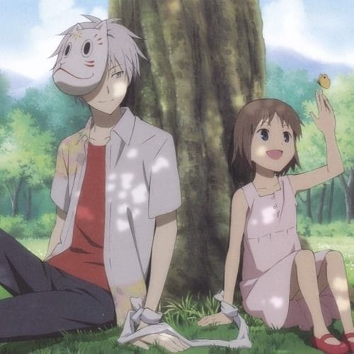

Anime Recomadation
Death Note
Synopsis
A shinigami, as a god of death, can kill any person—provided they see their victim's face and write their victim's name in a notebook called a Death Note. One day, Ryuk, bored by the shinigami lifestyle and interested in seeing how a human would use a Death Note, drops one into the human realm. High school student and prodigy Light Yagami stumbles upon the Death Note and—since he deplores the state of the world—tests the deadly notebook by writing a criminal's name in it. When the criminal dies immediately following his experiment with the Death Note, Light is greatly surprised and quickly recognizes how devastating the power that has fallen into his hands could be. With this divine capability, Light decides to extinguish all criminals in order to build a new world where crime does not exist and people worship him as a god. Police, however, quickly discover that a serial killer is targeting criminals and, consequently, try to apprehend the culprit. To do this, the Japanese investigators count on the assistance of the best detective in the world: a young and eccentric man known only by the name of L.
Sailor Moon


Synopsis
Usagi Tsukino is an average student and crybaby klutz who constantly scores low on her tests. Unexpectedly, her humdrum life is turned upside down when she saves a cat with a crescent moon on its head from danger. The cat, named Luna, later reveals that their meeting was not an accident: Usagi is destined to become Sailor Moon, a planetary guardian with the power to protect the Earth. Given a special brooch that allows her to transform, she must use her new powers to save the city from evil energy-stealing monsters sent by the malevolent Queen Beryl of the Dark Kingdom. But getting accustomed to her powers and fighting villains are not the only things she has to worry about. She must find the lost princess of the Moon Kingdom, the other Sailor Guardians, and the Legendary Silver Crystal in order to save the planet from destruction.
Hotarubi no Mori e
Synopsis
Intrigued by the tale of a mountain god, six-year-old Hotaru Takegawa loses her way in the ancient forest while visiting her uncle. Exhausted and desperate for help, Hotaru is thrilled to find a masked forest spirit named Gin. She learns the hard way that she should not touch the boy, or he would disappear. In spite of this, Gin leads Hotaru out of the forest and warns her never to return when she promises to come again with a gift. Paying no heed to his cautionary words, and despite being separated by both distance and planes of existence, Hotaru and Gin become close friends as she visits him every summer. However, their relationship and resolve are put to the test, when romantic feelings conflict with the one and only rule. Based on Yuki Midorikawa's manga of the same name, Hotarubi no Mori e is a tale of friendship and compromise of two people who should never have crossed paths, as their lives become hopelessly intertwined.
Noragami


Synopsis
In times of need, if you look in the right place, you just may see a strange telephone number scrawled in red. If you call this number, you will hear a young man introduce himself as the Yato God. Yato is a minor deity and a self-proclaimed "Delivery God," who dreams of having millions of worshippers. Without a single shrine dedicated to his name, however, his goals are far from being realized. He spends his days doing odd jobs for five yen apiece, until his weapon partner becomes fed up with her useless master and deserts him. Just as things seem to be looking grim for the god, his fortune changes when a middle school girl, Hiyori Iki, supposedly saves Yato from a car accident, taking the hit for him. Remarkably, she survives, but the event has caused her soul to become loose and hence able to leave her body. Hiyori demands that Yato return her to normal, but upon learning that he needs a new partner to do so, reluctantly agrees to help him find one. And with Hiyori's help, Yato's luck may finally be turning around.